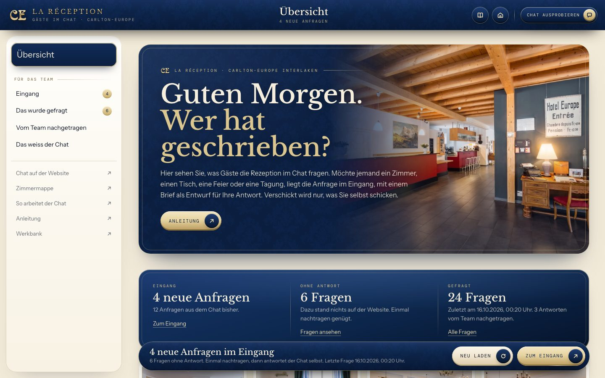
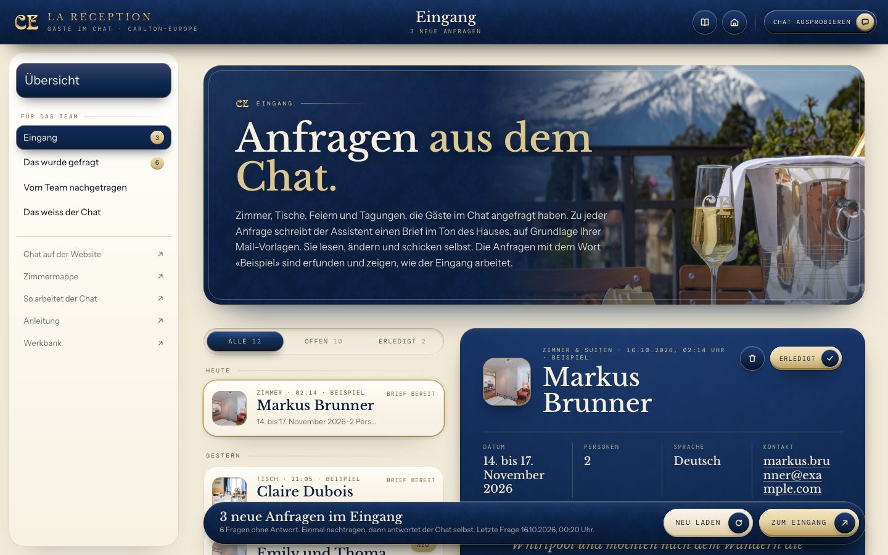
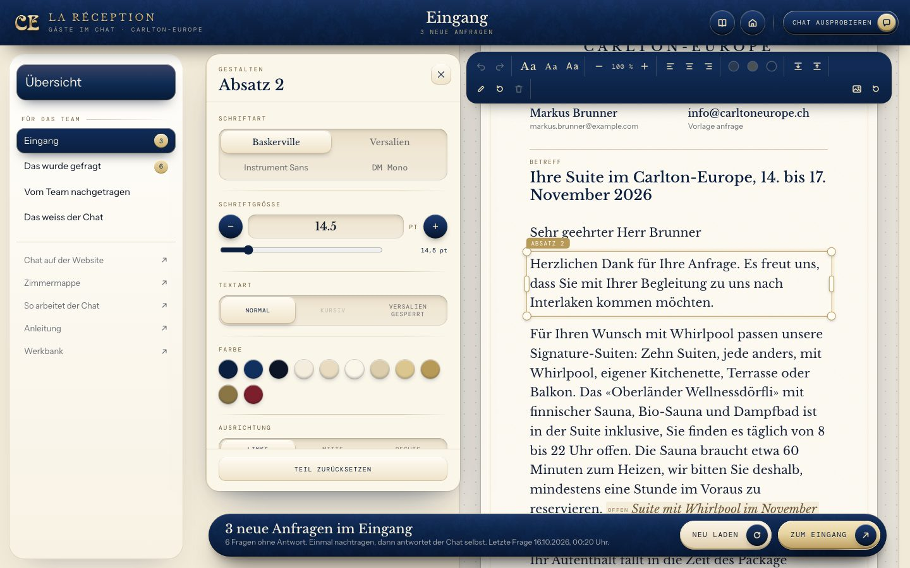
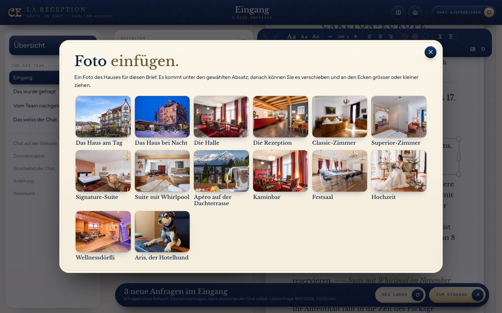
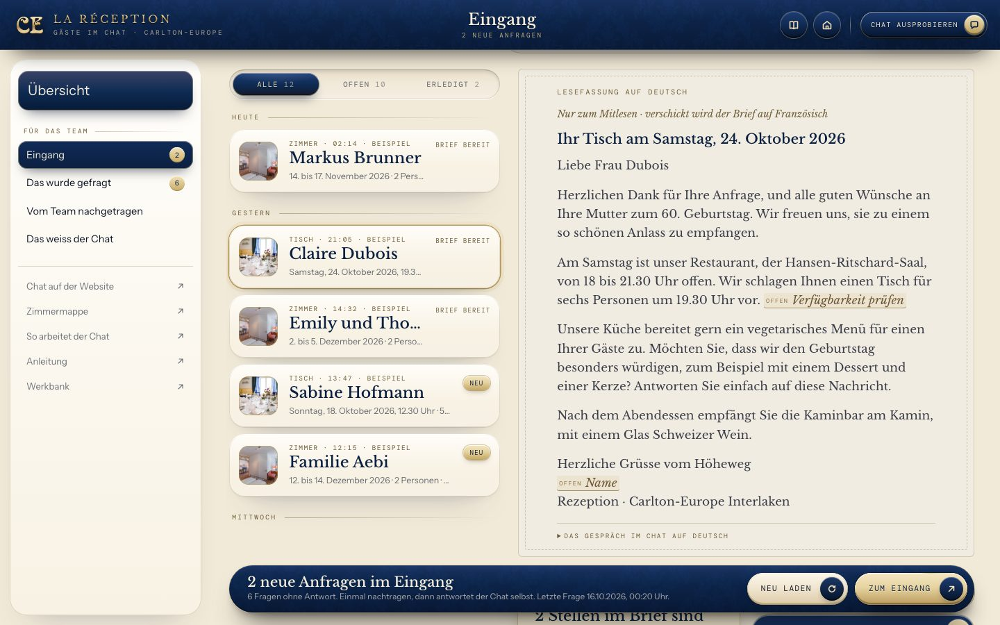
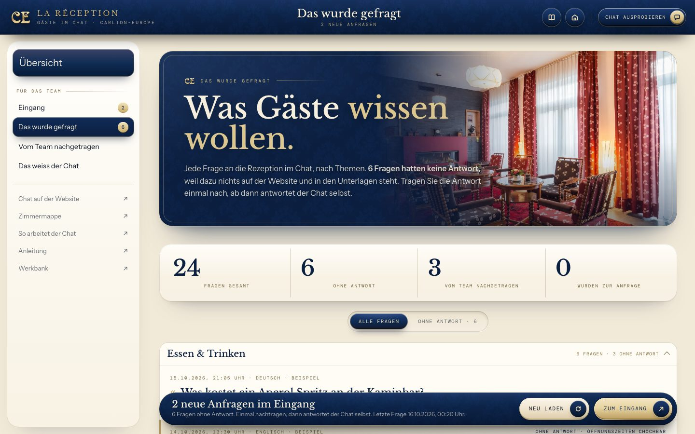
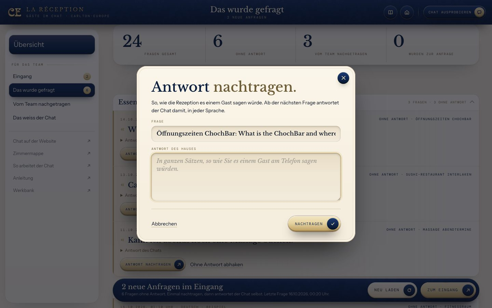
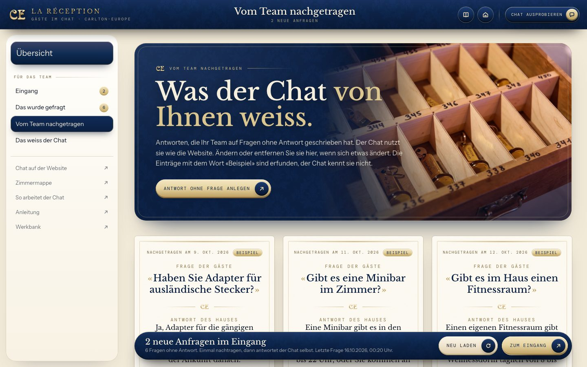
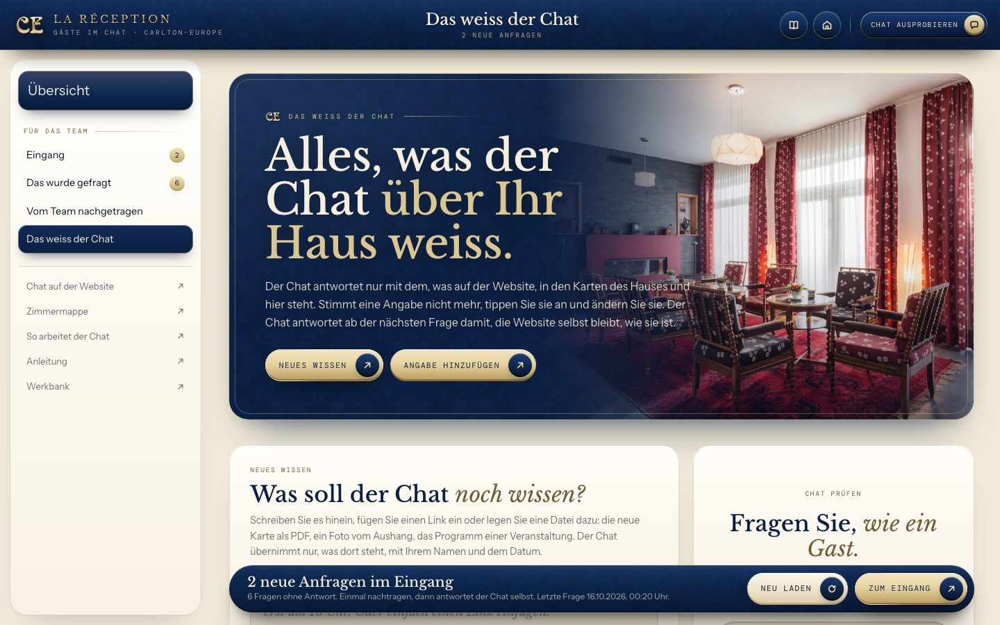
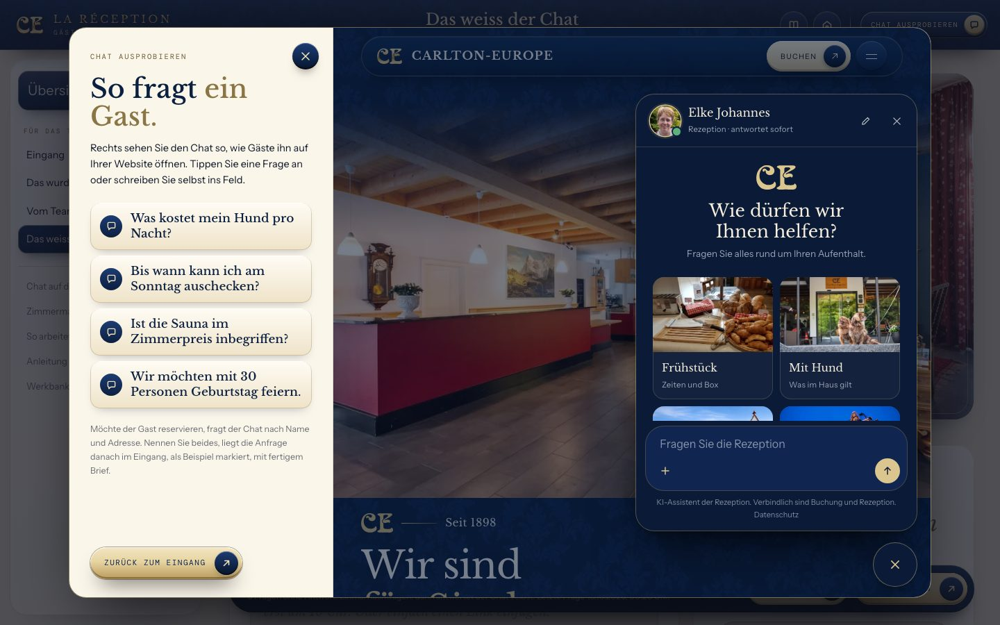

So ist La Réception aufgebaut.
La Réception ist das Werkzeug Ihres Teams hinter der Rezeption im Chat. Der Chat steht auf der Website unten rechts, in der Zimmermappe auf dem Handy der Gäste und hinter dem QR-Code im Zimmer. Hier landet, was Gäste anfragen, und hier sehen Sie jede Frage, die gestellt wurde.
- Oben in der Übersicht drei Felder: neue Anfragen im Eingang, Fragen ohne Antwort, alle Fragen bisher. Darunter vier Arten (Zimmer, Tisch, Feier, Tagung) mit der Zahl der Anfragen, links «Zuletzt angefragt», rechts «Zuletzt gefragt».
- Links die Bereiche: «Eingang», «Das wurde gefragt», «Vom Team nachgetragen» und «Das weiss der Chat». Die Zahl daneben zeigt, was auf Sie wartet. Auf dem Handy öffnet «Bereiche» die Liste.
- Die Leiste unten sagt in einem Satz, was offen ist. «Neu laden» holt den Stand, «Zum Eingang» führt zu den Anfragen. La Réception sieht auch von selbst nach, ob etwas Neues da ist.

Eine Anfrage beantworten.
Möchte ein Gast einen Tisch, eine Feier, eine Tagung oder ein Zimmer mit persönlichem Angebot und nennt Name und Kontakt, legt der Chat die Anfrage in den Eingang. Er sagt dem Gast nie, dass etwas reserviert oder bestätigt ist, nur, dass sich das Haus persönlich meldet.
- «Eingang» öffnen. Oben die Auswahl «Alle», «Offen», «Erledigt» mit der Zahl. Die Anfragen stehen nach Tagen geordnet (Heute, Gestern, Wochentag, Früher). Neue tragen ein goldenes Feld «Neu».
- Eine Anfrage anklicken. Rechts stehen Name, Datum, Personen, Sprache, Kontakt und das Anliegen als Zitat. Unter «Das Gespräch im Chat» lesen Sie nach, was der Gast geschrieben hat. Öffnen macht eine neue Anfrage zur gelesenen.
- Beim ersten Öffnen schreibt der Assistent den Brief. Das dauert einen Moment. Er folgt der Mail «Ihre Anfrage ist bei uns» und schreibt in der Sprache des Gastes (Deutsch, Englisch oder Französisch).
- Ist alles beantwortet, «Erledigt» drücken. Die Anfrage bleibt in der Liste, blasser, und lässt sich mit «Wieder offen» zurückholen.

Den Brief gestalten.
Der Brief liegt wie ein Blatt Papier vor Ihnen, mit Briefkopf, Anrede, Absätzen und Gruss. Sie arbeiten direkt darin, wie in einem Gestaltungsprogramm. Alles wird von selbst gesichert («Gesichert» steht über dem Brief).
- Wählen: einen Teil anklicken (Absatz, Betreff, Zeichen, Hausname, Linie). Ein goldener Rahmen mit dem Namen erscheint, die Leiste oben wird frei und links öffnet sich die Seitenleiste «Gestalten».
- Schreiben: Doppelklick oder Enter schreibt in den Teil. Klick ausserhalb oder Esc beendet das Schreiben. Stellen in [Klammern] sind offene Felder, die Ihr Team ausfüllt (Preis, Verfügbarkeit); sie sind gold markiert.
- Verschieben: ziehen. Der Teil rastet an Papierkanten, Mitte und anderen Teilen ein (rote Hilfslinien); Alt hält das Einrasten aus. Pfeiltasten verschieben um 1 Pixel, mit Umschalt um 10.
- Grösse: die Ecken ziehen (Schrift) oder die Seiten (Breite); oder in der Leiste «+» und «−».
- Schrift und Ausrichtung in der Leiste oben: Antiqua (Baskerville), Versalien, Grotesk, links, Mitte, rechts, Linienfarbe. Die Seitenleiste bietet mehr: Schriftart, Schriftgrösse in Punkt, Textart, Hausfarben, Abstände davor und danach, Sperrung, Zeilenabstand, Deckkraft, Lage und «Teil zurücksetzen».
- Foto einfügen: in der Leiste das Bild-Symbol. Vierzehn Fotos des Hauses stehen zur Wahl (Haus, Halle, Zimmer, Dachterrasse, Kaminbar, Festsaal …). Das Foto kommt unter den gewählten Absatz; verschieben, Grösse ziehen, Ausschnitt in der Seitenleiste, mit Entfernen oder Löschen-Taste weg.
- Linien sind eigene Teile: Stärke, Farbe und Länge ändern, oder entfernen.
- Rückgängig: die Pfeile in der Leiste oder ⌘Z, wiederholen mit Umschalt ⌘Z. «Zurück auf die Vorlage» (Symbol rechts in der Leiste) stellt Text, Anordnung und Fotos her, wie der Assistent sie geschrieben hat.


Brief senden und sichern.
Hier wird nichts verschickt. Die Mail schicken Sie selbst, aus Ihrem Mailprogramm.
- Brief kopieren legt den gestalteten Brief (mit Anordnung, Linien und Fotos) und den reinen Text in die Zwischenablage. Im Mailprogramm einfügen: der Brief erscheint, wie Sie ihn gestaltet haben.
- Im Mailprogramm öffnen (nur wenn der Gast eine E-Mail-Adresse genannt hat) legt eine neue Mail an den Gast mit Betreff und Text an.
- Als PDF sichern setzt den Brief als fertige A4-Seite auf Briefpapier und lädt die Datei direkt («Carlton-Europe – Name – Datum.pdf»). Passt der Text, ist es eine Seite; sonst bricht er sauber um, mit kleinem Briefkopf auf der Folgeseite, Fusszeile und Rahmen auf jeder Seite. Geht auch aus «Nur Text».
- Rechts neben dem Brief steht die Notiz «Vor dem Senden»: wie viele Stellen offen sind, woher die Angaben stammen und was das Team vorher klären muss.
Auf Deutsch lesen.
Schreibt ein Gast Englisch oder Französisch, steht der Brief in seiner Sprache. Damit Ihr Team weiss, was darin steht, bevor es ihn schickt, gibt es eine deutsche Lesefassung.
- Bei einer fremdsprachigen Anfrage über dem Brief «Auf Deutsch lesen» drücken.
- Unter dem Brief erscheint die Lesefassung mit Betreff und Text, dazu «Das Gespräch im Chat auf Deutsch». Sie ändert nichts am Brief und wird nie verschickt.
- Haben Sie den Brief geändert, weist ein Hinweis darauf hin; «Neu übersetzen» holt eine frische Fassung. «Deutsch ausblenden» schliesst sie wieder.

Den Brief lenken und löschen.
Wissen Sie mehr als die Website, zum Beispiel dass der Festsaal an dem Tag frei ist, geben Sie es dem Assistenten mit.
- Unter dem Brief «Neu schreiben lassen» drücken, im Fenster den Hinweis in einem Satz eintragen und «Neu schreiben» drücken. Der neue Brief ersetzt den alten; wollen Sie Ihre Fassung behalten, kopieren Sie sie vorher mit «Brief kopieren».
- Preise und Leistungen nennt der Assistent nur, wenn sie auf der Website oder in den Unterlagen stehen.
- Löschen: Anfragen enthalten Namen und Kontakte und bleiben zwölf Monate gespeichert. Möchte ein Gast, dass seine Angaben gelöscht werden, die Anfrage öffnen, oben rechts das runde Zeichen mit dem Papierkorb drücken und «Endgültig löschen» bestätigen.
Was Gäste wissen wollen.
Jede Frage an den Chat steht hier, nach Themen: Essen & Trinken, Zimmer & Buchung, Hund, Wellness & Haus, Anreise & Abreise, Ausflüge & Region, Feiern & Tagen, Jobs.
- «Das wurde gefragt» öffnen. Oben die Zahlen: alle Fragen, ohne Antwort, vom Team nachgetragen, zur Anfrage geworden.
- Eine Frage aufklappen: «Antwort des Chats» zeigt, was der Chat geantwortet hat.
- Fragen ohne Antwort sind golden hinterlegt; «Ohne Antwort» oben zeigt nur diese. Ohne Antwort heisst: dazu steht nichts auf der Website und in den Unterlagen. Der Chat hat den Gast an die Rezeption verwiesen, statt zu raten.

Eine Antwort nachtragen.
Was einmal gefragt wurde, wird wieder gefragt. Tragen Sie die Antwort einmal nach, beantwortet der Chat die Frage ab dann selbst, in jeder Sprache.
- Bei der Frage ohne Antwort «Antwort nachtragen» drücken.
- Die Frage so lassen oder kürzer fassen. Die Antwort so schreiben, wie Sie es einem Gast am Telefon sagen würden, dann «Nachtragen».
- Passt eine Frage nicht zum Haus: «Ohne Antwort abhaken». Sie bleibt im Protokoll, ohne Markierung.

Was der Chat von Ihnen weiss.
Unter «Vom Team nachgetragen» stehen alle Antworten Ihres Teams als Karteikarten. Der Chat nutzt sie wie die Website.
- Ändert sich etwas, bei der Karte «Ändern» drücken und neu schreiben.
- Gilt etwas nicht mehr, «Entfernen». Der Chat verweist bei dieser Frage dann wieder an die Rezeption.
- Oben «Antwort ohne Frage anlegen», wenn Sie dem Chat etwas mitgeben wollen, bevor jemand fragt.

Alles, was der Chat über Ihr Haus weiss.
Der Chat antwortet nur mit dem, was auf der Website, in den Unterlagen des Hauses (Karten, Hundeinformationen, Bankett, Seminar) und hier steht. Dieser Bereich zeigt es in Bereichen geordnet, so dass Sie auf einen Blick sehen, was Sache ist.
- Links die Bereiche (Das Haus, Zimmer & Suiten, Essen & Trinken …), rechts die Angaben als Zeilen mit «So steht es auf der Website» als Beleg.
- Suchen: das Feld oben sucht in allen Bereichen. Steht zu einem Stichwort noch nichts im Wissen, bietet La Réception zwei Wege an: selbst eintragen, oder die zuständige Abteilung per Mail fragen. Das Thema steht dann oben als «Offen bei Ihrem Team», bis die Antwort eingetragen ist.
- Eine Angabe ändern: die Zeile antippen, Text ändern, Namen eintragen, «Übernehmen». Der Chat antwortet ab der nächsten Frage damit; die Website bleibt, wie sie ist. «Nicht mehr nennen» schaltet eine Angabe ab, «Wie auf der Website» stellt sie zurück.
- Chat prüfen: rechts oben «Fragen Sie, wie ein Gast». Die Antwort kommt aus dem Wissen, so wie es jetzt steht. Diese Frage landet nicht im Protokoll.
- Unten «Zuletzt geändert» listet, wer was wann geändert hat.

Neues Wissen eintragen.
Ein Feld für alles, was der Chat noch nicht wusste: eigener Text, ein Link, ein Dokument, ein Foto.
- Text: schreiben, einen Bereich wählen oder «automatisch» lassen, «Übernehmen». Ein Text mit gewähltem Bereich steht sofort im Wissen.
- Link: die Adresse einer Veranstaltung oder eines Anbieters einfügen. Die Seite wird im Hintergrund gelesen (meist eine halbe Minute), der Chat übernimmt nur, was dort steht, mit Datum und Quelle. «Neu einlesen» holt den neuen Stand, «Entfernen» nimmt die Angaben wieder weg.
- Dokument oder Foto: PDF, Word, Text und Fotos bis 20 MB, per Knopf oder hineinziehen. Zum Beispiel die neue Karte als PDF oder ein Foto vom Aushang.
- Angabe hinzufügen: Bereich, Titel, Text und «Gilt bis», zum Beispiel für eine Veranstaltung. Abgelaufene Angaben nennt der Chat nicht mehr, sie bleiben sichtbar.
- Bei jeder Änderung fragt La Réception einmal nach Ihrem Namen; er bleibt auf diesem Gerät gemerkt und steht im Verlauf.
So fragt ein Gast.
Oben rechts «Chat ausprobieren» öffnet ein Fenster: links vier Fragen zum Antippen, rechts die Website mit offenem Chat. Fragen und Anfragen daraus sind als «Beispiel» markiert und zählen nicht als Gäste.

«Der Chat hat sein Guthaben aufgebraucht»: Das KI-Konto des Hauses ist für diesen Monat leer. Anfragen, Fragen und Nachträge bleiben sichtbar, der Chat selbst antwortet wieder, sobald das Konto frei ist.
Eine Seite lässt sich nicht lesen, wenn sie ihren Inhalt erst im Browser zeigt oder ein PDF ist. Dann den Text der Seite ins Feld «Neues Wissen» kopieren.
Fragen und Antworten im Protokoll enthalten keine E-Mail-Adressen und Telefonnummern (der Chat macht sie unkenntlich). Anfragen mit Namen bleiben zwölf Monate gespeichert; so steht es im Datenschutz der Website, Abschnitt «KI-Assistent der Rezeption».